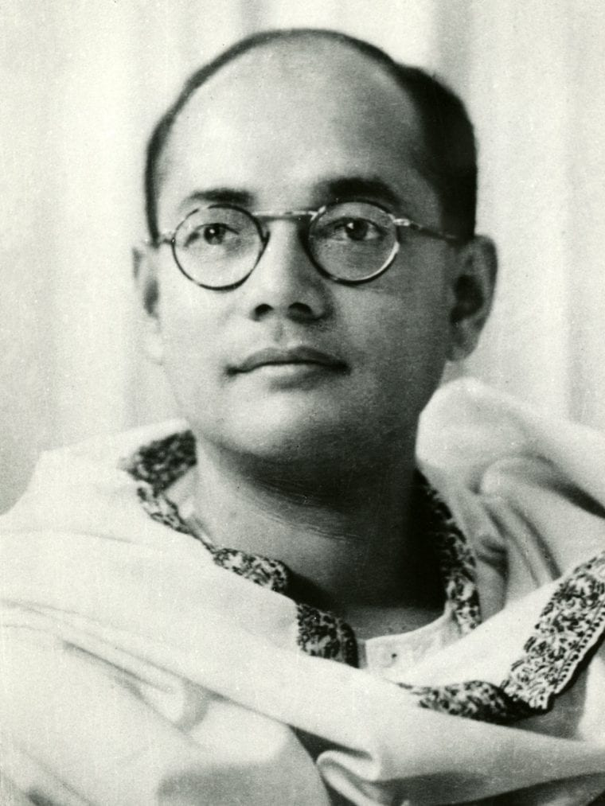

| Name | Description | Picture |
|---|---|---|
| Netaji Subhash Chandra Bose | One of the greatest freedom fighters and national leaders of India that history witnessed was none other than Subhas Chandra Bose. He was born on 23rd January 1897. He was a radical nationalist, and his ultimate patriotism carved a hero out of him. Bose disagreed with the ideals of non-violence promoted by Gandhi, instead believing that only armed revolt could oust the British from India. |  |
| Mahatma Gandhi | Born on 2nd October 1869, Mohandas Karamchand Gandhi is revered as the Father of the Nation for his immense sacrifices for India. He not only ushered India towards freedom, but he also became an inspiring figure for many independence struggles and rights movements across the world. The greatest Indian freedom fighter, popularly called Bapu, Gandhi, introduced the principle of non-violence in India. |
|
| Pt. Jawaharlal Nehru | Pandit Jawaharlal Nehru was born on 14th November 1889. He was the only child of Motilal Nehru and Swarup Rani Nehru. Nehru was one of the most renowned barristers and national leaders of India, known for his intellectual capabilities, which soon made him one of the greatest politicians India had ever seen. |
|
| Chandra Shekhar Azad | Chandra Shekhar Azad, born in 1906, was a close companion of Bhagat Singh in the independence movement. He was also a member of the Hindustan Republican Association and the bravest and daring Indian freedom fighter against the British authorities. |
|
| Shaheed Bhagat Singh | Bhagat Singh is one of the most iconic Indian freedom fighters, known for his radical approach and unmatched courage. Born in 1907 in Punjab, his revolutionary spirit was ignited by the death of Lala Lajpat Rai at the hands of British police. As a prominent member of the Hindustan Socialist Republican Association (HSRA), Bhagat Singh was committed to direct action to overthrow British rule in India. |
|